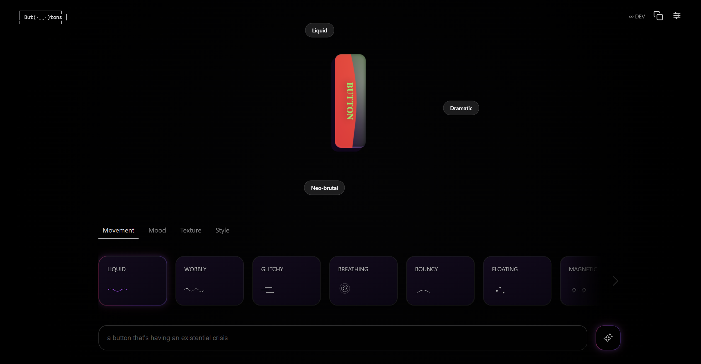
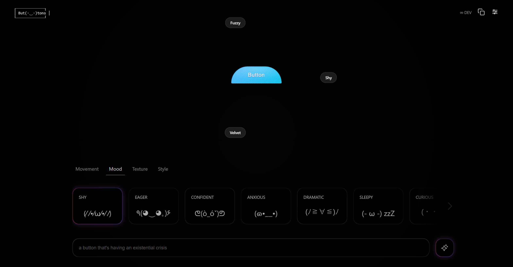
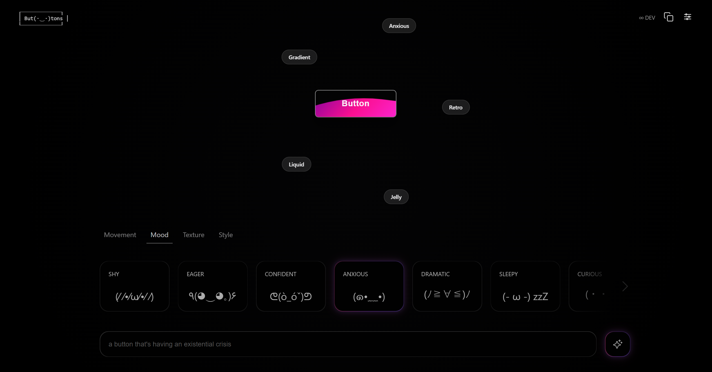

But.tons · opening concept · personality through motion and form
Exploring how AI temperature and curated ingredients can turn button design into creative experimentation.

Most AI tools optimize for output. Playground AI optimizes for discovery – it encourages users to explore possibilities they didn't know existed. I wanted to apply that same philosophy to something much smaller: button design.
What if a button wasn't just a functional UI element, but a small moment of character? What if the tool encouraged experimentation instead of correctness – where getting a surprising result was the point, not a failure state?
Can a button feel expressive?


Curated ingredients act as a creative starting point. They don't generate the result directly – they show users what's possible and help them move beyond the familiar defaults of UI design.
AI interpretation is the second layer. It pushes the result further, adding surprise and variation that you would rarely design intentionally. Together they form the core principle: give users a playful direction, then let the model expand the creative space.


One unexpected challenge was not making the prompt more capable. It was making it more restrained.
In early versions, I asked the model to generate creative button labels alongside the CSS. It sounded like a useful addition – but it split the model's attention. It started optimizing for clever copy instead of visual character. The labels distracted from what actually mattered: shape, style, motion, texture.
The best results came when I removed that instruction entirely. A quieter prompt forced the model to concentrate. Less scope yielded stronger output.
There is no Edit toggle. No separate mode for modifying versus generating. The model infers intent directly from the prompt – if a previous button exists in the conversation, it modifies only what was asked. Otherwise, it regenerates from scratch.
This keeps iteration fluid and preserves creative continuity. You don't interrupt the creative state to switch context. The conversation itself becomes the design history.
The ingredient system gives creative direction. The control panel gives precision. Not every property benefits from AI interpretation – sometimes you need exact control over a specific value.
This hybrid setup keeps the experience playful while still making it usable. The model handles the expressive work; the controls handle the deliberate work. Neither gets in the way of the other.



Expressive cards, transparent state, and a UI that stays steady while the button evolves. Every small interaction was designed to stay out of the way – to keep attention on the creative result, not the tool producing it.

LLMs are probabilistic systems.
Variation is not a bug – it is the core of how they work.
By adding guardrails – curated ingredients, a constrained system prompt, and conversational editing – But.tons turns that probabilistic behavior into a product quality. Users stay in control while still leaving room for surprise. The randomness isn't reduced. It's made useful.